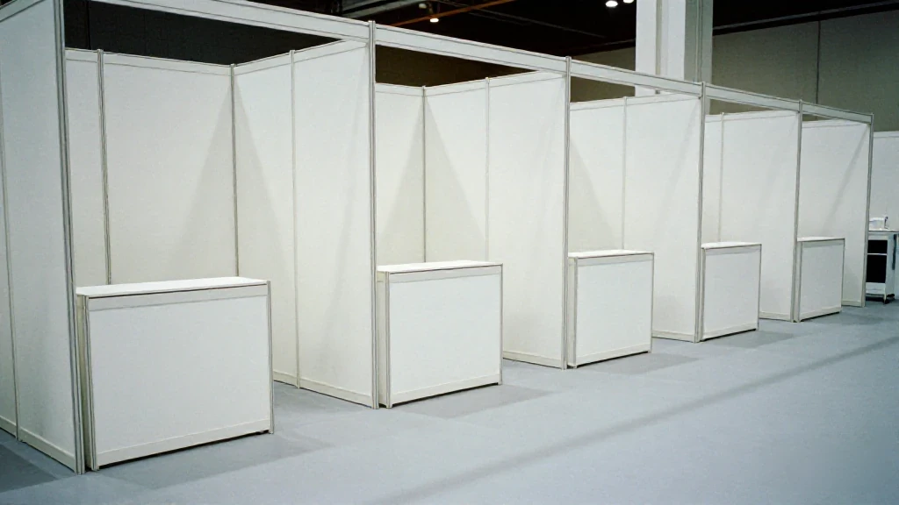
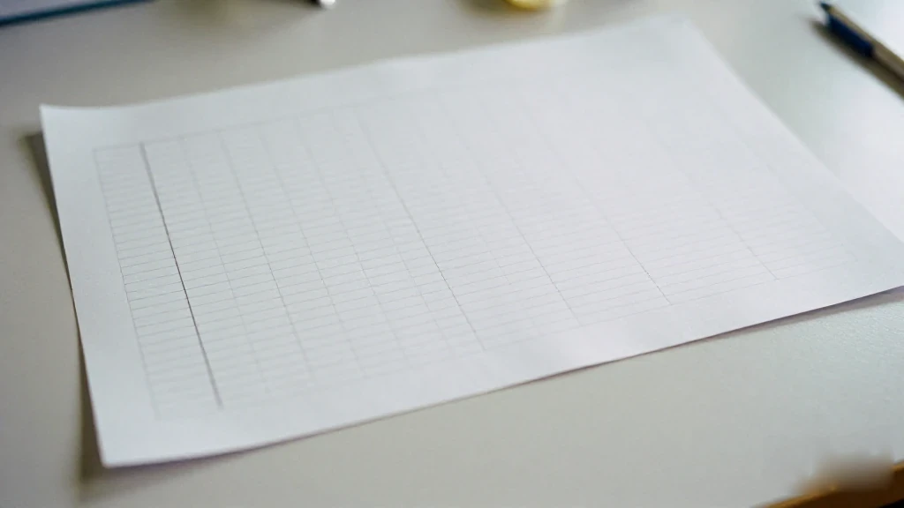
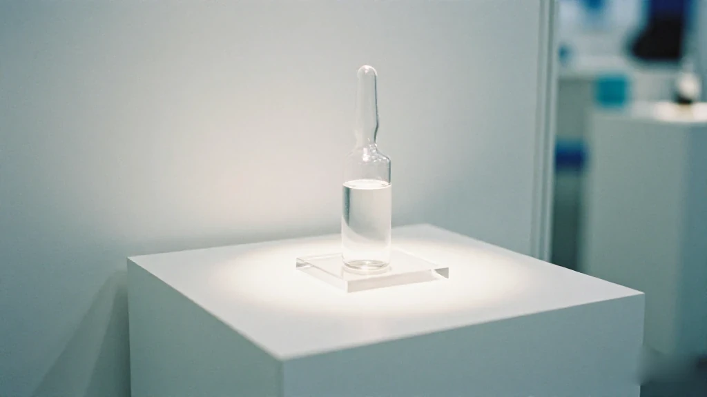

圖片由 AI輔助創作（Z-Image-Turbo）Image by AI (Z-Image-Turbo)
【鄭哥點評】
第140屆廣交會第一期，10月15到19日，主題「先進製造」。展覽總面積52萬平方米，展位超過2.5萬個，參展企業超過1.2萬家。今屆第一次設立國際醫療服務專區。
其中一個展位屬於一品紅藥業集團，擺出嚟嘅係氘泊替諾雷，代號 AR882——一隻1類在研痛風創新藥。
AR882 係在研藥物，未獲批上市。
我唔識藥，亦唔會扮識。下面所有臨床數字，全部係《證券日報》2026年10月18日報道講嘅，我只係照錄，再加我自己做外貿嘅觀察。
第一幕：AR882 係乜嘢，報道點講
圖片由 AI輔助創作（Z-Image-Turbo）Image by AI (Z-Image-Turbo)
據《證券日報》報道，AR882 係一款高效選擇性尿酸轉運蛋白（URAT1）抑制劑。據報道所述，它係目前全球唯一已完成Ⅲ期臨床、可溶解痛風石嘅口服小分子在研藥物。
呢句裡面有三個詞要留意：「據報道所述」、「在研」，同「唯一」。前兩個，係我加嘅；最後嗰個，係報道嘅原話。藥物嘅安全性同療效，最終以監管機構審批為準，唔係以展位、以報道、以我嘅文章為準。
報道又提到：AR882 已獲美國 FDA 授予快速通道資格；被列入國家藥監局大灣區審評中心重點產品；化合物專利已在全球30多個國家獲得授權，保護期可延長至2042年。
第二幕：數字係報道講嘅，唔係我講嘅

圖片由 AI輔助創作（Z-Image-Turbo）Image by AI (Z-Image-Turbo)
據《證券日報》報道，國內Ⅲ期臨床試驗頂線數據於2026年9月3日公告：治療24週之後，AR882 75mg 組血尿酸降至 360μmol/L 以下嘅達標率達到 86%，顯著優於非布司他 40mg 組。
全球Ⅱ期臨床數據：用藥12個月之後，單藥組有 43% 嘅患者、聯用組有 57% 嘅患者，實現至少一個目標痛風石嘅完全消退；尿酸鹽結晶負荷顯著減少。
商業化進度方面，報道講：國內Ⅲ期臨床已完成，計劃申報上市；全球Ⅲ期臨床預計2026年第四季度披露 REDUCE 1 試驗數據；一品紅正同步推進商業化籌備。
我照錄呢啲數字，原因好簡單：我唔係醫生，唔係藥監，唔係統計師。我嘅讀者裡面，有人可能正需要呢類藥，有人可能只係想知中國創新藥走到邊。前者應該問醫生；後者，我講我睇到嘅嘢。
第三幕：「唯一」呢個詞，喺外貿場合好有分量

圖片由 AI輔助創作（Z-Image-Turbo）Image by AI (Z-Image-Turbo)
據報道所述，AR882 係目前全球唯一已完成Ⅲ期臨床、可溶解痛風石嘅口服小分子在研藥物。呢個「唯一」，擺喺廣交會呢種場合，係另一種意思。
廣交會係買賣場合。但一隻未獲批上市嘅藥擺喺展位上，唔係用嚟賣嘅。它賣嘅係一張名片：中國嘅醫療創新，都可以企喺國際前排。
我做外貿26年，見過唔少「唯一」。大部分「唯一」係宣傳語；少數「唯一」係真門檻——專利、臨床、監管資格。呢三樣，一樣都冇辦法靠一場展會做到，只能靠以年計嘅投入。
所以呢個展位，我睇到嘅係兩個字：耐性。外貿最缺嘅，從來都唔係訂單，係肯等十年嘅人。
第四幕：醫療服務專區嘅信號，同我睇到嘅第三點
圖片由 AI輔助創作（Z-Image-Turbo）Image by AI (Z-Image-Turbo)
今屆廣交會第一次設立國際醫療服務專區。貿易服務展區擴容到10大類生產性服務業，醫療係新增項。呢個信號，比任何一隻藥都重要。
中國嘅出口結構，正由純貨物貿易，向「貨物＋服務＋技術」遷移。創新藥入廣交會，同家電、機電同台展示——意思係：醫療創新已經被納入中國出口競爭力嘅敘事裡面。
第三點，我唔講價錢，講路。一隻藥由臨床走到上市，要過Ⅲ期臨床、過監管、過專利、過產能，每一關都以年計。呢種「慢」，同廣交會傳統嘅「快」——報價、落單、出貨——係兩套節奏。醫療服務專區嘅出現，等於廣交會自己都承認：有一部分中國出口，已經唔可以再用「快」去衡量。
而呢種「慢出口」，正正係最難被取代嘅一種。貨物可以被更低價嘅地方搶走；一個過咗Ⅲ期臨床嘅分子，搶唔走。
所以我睇到嘅第三點，唔係「呢隻藥值幾多」，而係：中國出口嘅下一段路，係由「貨物」走到「技術」。藥係最難出口嘅一種技術——所以它走得起，其他技術出口就有參照。
最後講返一句：AR882 係在研藥物，未獲批上市。我上面講嘅，全部係產業觀察。
資料來源：證券日報網《廣交會傳來好消息！國產痛風創新藥亮相，有望直接溶解痛風石》，記者李雯珊，2026年10月18日。本文只引用該報道公開陳述的事實。
本文只係產業觀察，唔構成醫療建議，亦唔構成投資建議。任何藥物嘅安全性同療效，以監管機構最終審批為準；如有健康問題請諮詢醫生。
圖片由 AI輔助創作（Z-Image-Turbo）Image by AI (Z-Image-Turbo)
[Zheng Ge's Take]
The first phase of the 140th Canton Fair ran from 15 to 19 October under the theme of advanced manufacturing: 520,000 square metres of exhibition space, more than 25,000 booths, more than 12,000 exhibitors. This year the fair set up an international medical services zone for the first time.
One of those booths belongs to Yipinhong Pharmaceutical Group. What it put on display is deuterated benzbromarone — AR882 — a Class 1 investigational drug for gout.
AR882 is an investigational drug and has not been approved for marketing.
I am not a doctor and I will not pretend to be one. Every clinical figure below comes from the Securities Daily report of 18 October 2026. I am copying them as they stand and adding only my own observations as someone who has worked in export trade.
Act One: What AR882 Is, and What the Report Says
圖片由 AI輔助創作（Z-Image-Turbo）Image by AI (Z-Image-Turbo)
According to the Securities Daily, AR882 is a highly selective urate transporter 1 (URAT1) inhibitor. As that report puts it, it is the only oral small molecule in the world that has completed Phase III trials and can dissolve gout tophi — and it is still investigational.
Three words in that sentence matter: "as the report puts it", "investigational", and "only". I supplied the first two; the last one is the report's own wording. The safety and efficacy of any drug are settled by the regulator's review, not by a booth, not by a newspaper, and certainly not by this article.
The report adds that AR882 has been granted fast-track designation by the US FDA, has been listed as a priority product by the National Medical Products Administration's Greater Bay Area review centre, and that its compound patent has been granted in more than thirty countries, with protection extendable to 2042.
Act Two: The Numbers Are the Report's, Not Mine
圖片由 AI輔助創作（Z-Image-Turbo）Image by AI (Z-Image-Turbo)
According to the Securities Daily, the top-line data from the domestic Phase III trial were announced on 3 September 2026: after 24 weeks of treatment, 86 per cent of patients on the 75 mg dose of AR882 reached a blood uric acid level below 360 μmol/L, significantly better than the febuxostat 40 mg arm.
From the global Phase II data: after 12 months, 43 per cent of patients in the monotherapy arm and 57 per cent in the combination arm achieved complete resolution of at least one target tophus, with a significant reduction in urate crystal burden.
On commercialisation, the report says the domestic Phase III trial is complete and a marketing application is planned; the global Phase III trial is expected to disclose REDUCE 1 data in the fourth quarter of 2026; and Yipinhong is preparing for commercialisation in parallel.
I copy those figures for a simple reason: I am not a doctor, not a regulator, not a statistician. Some readers may need a drug of this kind; others may simply want to know how far Chinese innovative drugs have come. The first group should ask a doctor. For the second, I will say what I saw.
Act Three: "Only" Carries a Lot of Weight in Export Trade
圖片由 AI輔助創作（Z-Image-Turbo）Image by AI (Z-Image-Turbo)
As the report puts it, AR882 is the only oral small molecule in the world that has completed Phase III trials and can dissolve gout tophi — and it is still investigational. Placed in a setting like the Canton Fair, that "only" means something else.
The Canton Fair is a place for buying and selling. But a drug that has not been approved for marketing cannot be sold at a booth. What it sells is a name card: Chinese medical innovation can stand in the front row internationally.
Twenty-six years in export have shown me a lot of "only"s. Most are marketing lines. A few are real thresholds — a patent, a trial, a regulatory qualification. None of those can be produced by turning up at an exhibition. They take years of money and time spent long before any revenue exists.
So what I saw at that booth, in two words, was patience. The thing export trade lacks most was never orders. It is people willing to wait ten years.
Act Four: The Signal in the Medical Zone, and My Third Point
圖片由 AI輔助創作（Z-Image-Turbo）Image by AI (Z-Image-Turbo)
This session the fair set up an international medical services zone for the first time. The trade services area now covers ten categories of producer services, and medicine is the new entry. That signal matters more than any single drug.
China's export mix is shifting from goods alone toward goods, services and technology together. An innovative drug appearing at the Canton Fair, on the same floor as appliances and machinery, means medical innovation has been folded into the story of China's export competitiveness.
My third point is not about price. It is about the road. A drug takes years to travel from the clinic to the market: Phase III, the regulator, the patent, the manufacturing capacity, each one measured in years. That slowness and the Canton Fair's traditional speed — quote, order, ship — are two different rhythms. The arrival of a medical services zone is the fair admitting that part of China's exports can no longer be measured by speed.
And that slow export is the hardest kind to replace. Goods can be undercut by a cheaper place. A molecule that has cleared Phase III cannot.
So my third point is not what the drug is worth. It is that the next stretch of China's export road runs from goods to technology. A drug is the hardest kind of technology to export — which is why, if this one can travel, other technology exports have a reference point.
One last line, plainly: AR882 is an investigational drug and has not been approved for marketing. Everything above is an industry observation.
Source: Securities Daily, "Good news from the Canton Fair: a Chinese innovative gout drug on show, with the potential to dissolve gout tophi directly", by Li Wenshan, 18 October 2026. This piece quotes only facts stated publicly in that report.
This is an industry observation only. It is not medical advice and not investment advice. The safety and efficacy of any drug are determined by the regulator's final approval; consult a doctor about any health concern.